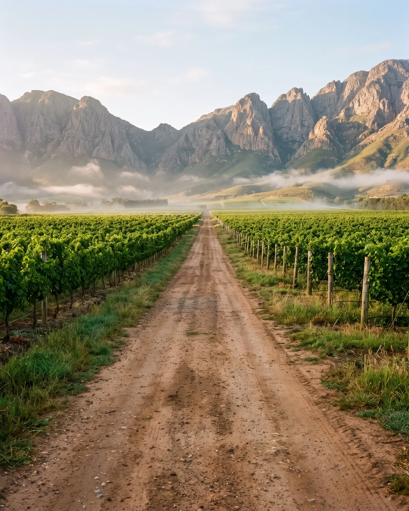
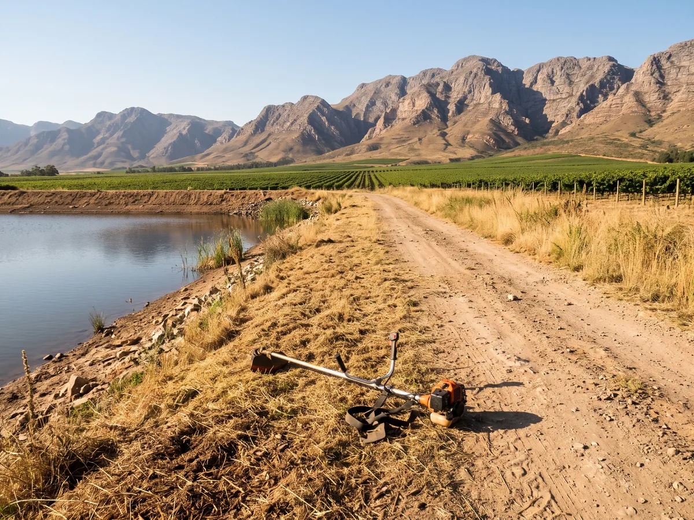
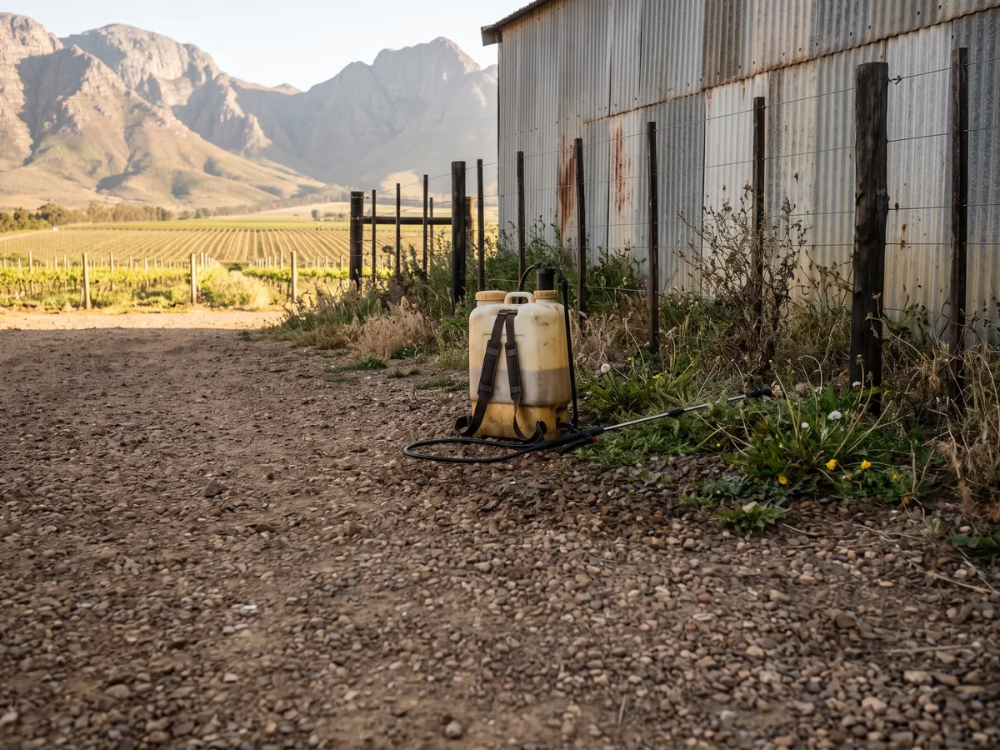
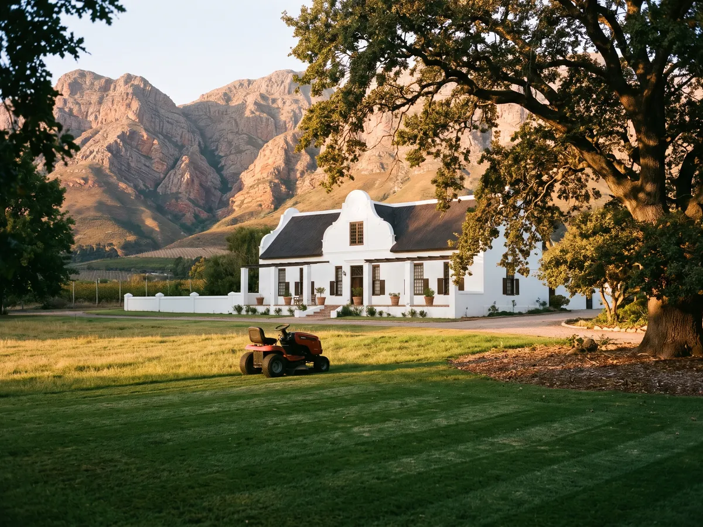
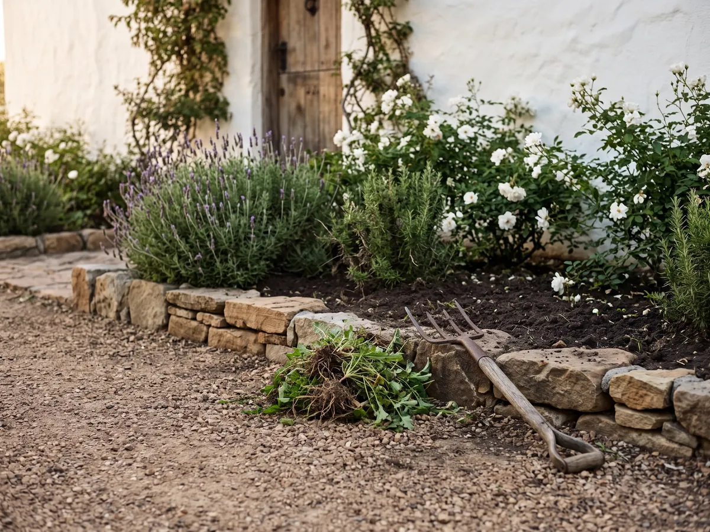
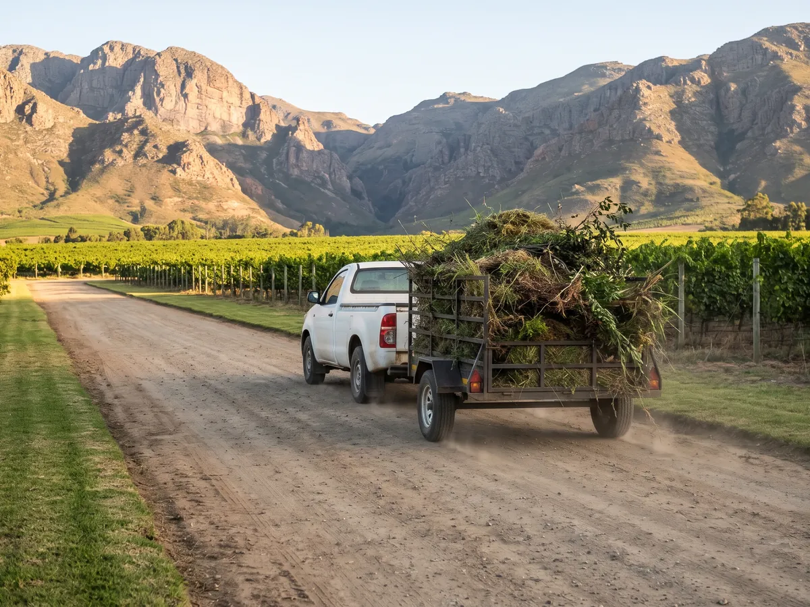

Plaasonderhoud · Breërivier-vallei
Rante, paaie en werf. Skoon gehou, op skedule.
Jou span fokus op die oes. Ons hou die rante, paaie, werf en werkershuise netjies, beplan rondom jou seisoen, met een kontakpersoon en een maandelikse faktuur.

Wat ons op die plaas doen
Van die hek tot by die werf.

Rante
Rante langs paaie, blokke, damme en lopies kort gehou: minder brandgevaar, beter toegang.

Gifbeheer
Onkruid op paaie, langs heinings en om geboue gespuit. [PCO-registrasie: bevestig]

Gras sny
Grasperke by die opstal, kantoor, proelokaal en werkershuise netjies gehou.

Beddings
Beddings by die ingang en opstal skoon, sodat besoekers en kopers 'n goeie eerste indruk kry.

Tuinvullis weg
Ingesluit. Ons laai alles op en ry dit van die plaas af. Geen hope wat jou span moet opruim nie.
Hoe ons met plase werk
Een kontrak. Een kontakpersoon. Een faktuur.
Ons stap die plaas saam met jou deur, stel 'n skedule op wat by jou seisoen pas, en hou daarby. Plaaswerk word per terreinbesoek gekwoteer, per maand of per projek.
Terreinbesoek
Ons ry die plaas saam met jou of jou bestuurder deur en merk wat gedoen moet word.
Skriftelike kwotasie & skedule
Binne [3] werksdae: 'n vaste prys en 'n skedule wat om oes en spuitprogramme werk.
Ons werk, jy boer
Ons span kom op die vasgestelde dae, met eie toerusting: [bosnyers, sproeiers, bakkie en sleepwa].
Maandelikse faktuur
Een faktuur aan die einde van die maand, met wat gedoen is. [BTW-geregistreer: bevestig]
Plase wat op ons staatmaak
Bure in die vallei.
“[Aanbeveling van 'n plaasbestuurder of eienaar, 1–2 sinne]”
Vrae
Wat boere ons gewoonlik vra
Is julle geregistreer om gif te spuit?
[Bevestig: PCO-registrasie onder Wet 36 van 1947, registrasienommer en produkte wat gebruik word.]
Kan julle om ons oes- en spuitprogram werk?
Ja. Die skedule word saam met jou opgestel en ons pas dit aan wanneer die seisoen verander.
Hoe lank is 'n kontrak?
[Bevestig: maand-tot-maand of 6/12 maande, opseggingstydperk.]
Bring julle eie toerusting en vervoer?
Ja. [Lys toerusting.] Ons het niks van die plaas nodig nie, behalwe toegang.
Is julle werkers verseker?
[Bevestig: COIDA-registrasie en openbare aanspreeklikheidsversekering.]
Kom ons stap jou plaas deur.
Die terreinbesoek en kwotasie is gratis en sonder verpligting.